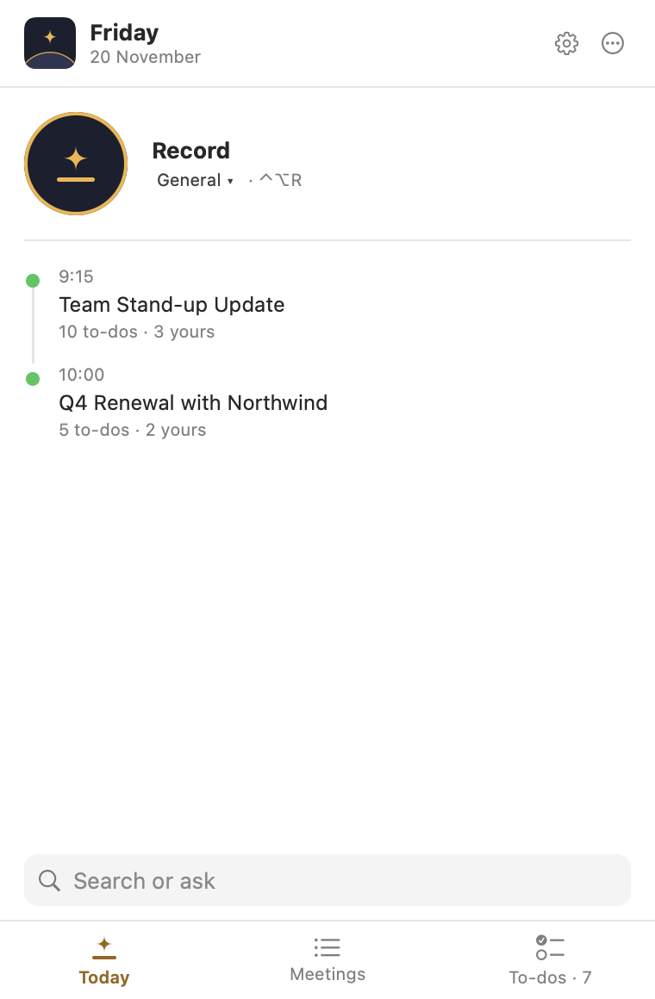
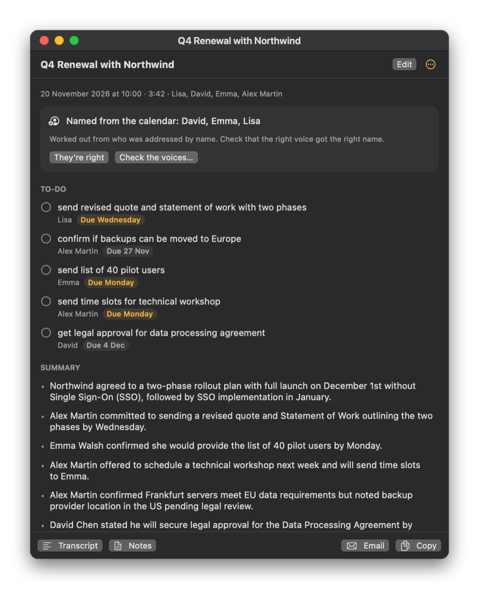
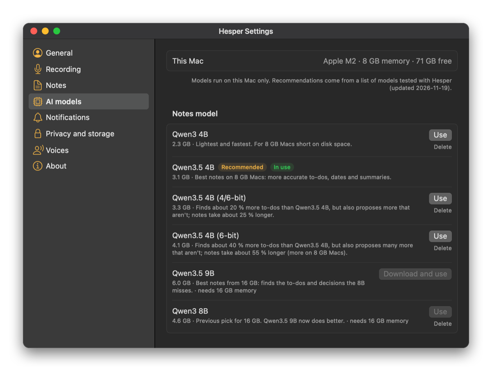

Hesper records your Teams, Zoom or Meet calls, works out who said what, and hands you a summary, the decisions and a to-do list — all with AI that runs on your own computer. No account, nothing uploaded.


Click record (or let it start by itself when a call begins). A few minutes after the meeting, your notes are ready.
Teams, Zoom, Meet, Webex — your microphone and the meeting audio, from the menu bar or a keyboard shortcut.
Separates the voices, and remembers colleagues once you've named them — next time they're labelled automatically.
Decisions, open questions and every action item with its owner and a real due date — and a reminder the day before.
Five minutes before a meeting, a brief of what's still open from last time. Works with your Outlook calendar.
“What did we decide about the budget?” — answers from all your notes, with links to the meeting it came from.
English, French and 97 others — even switching mid-meeting. Notes in the meeting's language, or one you choose.
The AI runs on your Mac. Your meetings never leave it.

Hesper updates itself after that.
Open the .dmg and drag Hesper into Applications.
If macOS can't verify the developer: System Settings → Privacy & Security → Open Anyway.
Your name, your meeting languages, and the AI models picked for your Mac (4–6 GB, downloaded once).
Microphone, and Screen & System Audio Recording to hear the other participants. Restart Hesper once.
Always tell the other participants that you're recording, and follow your company's rules.